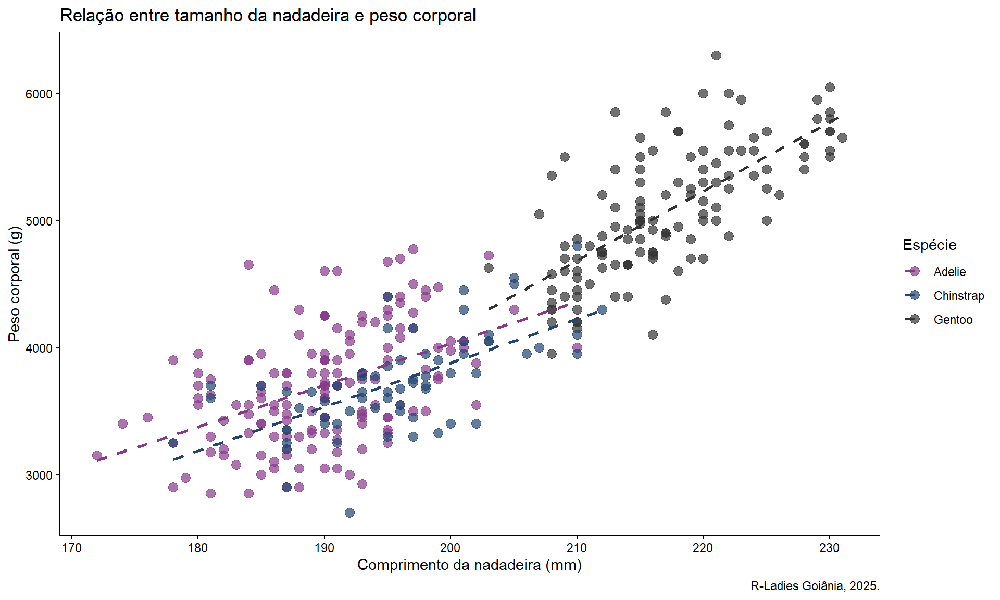
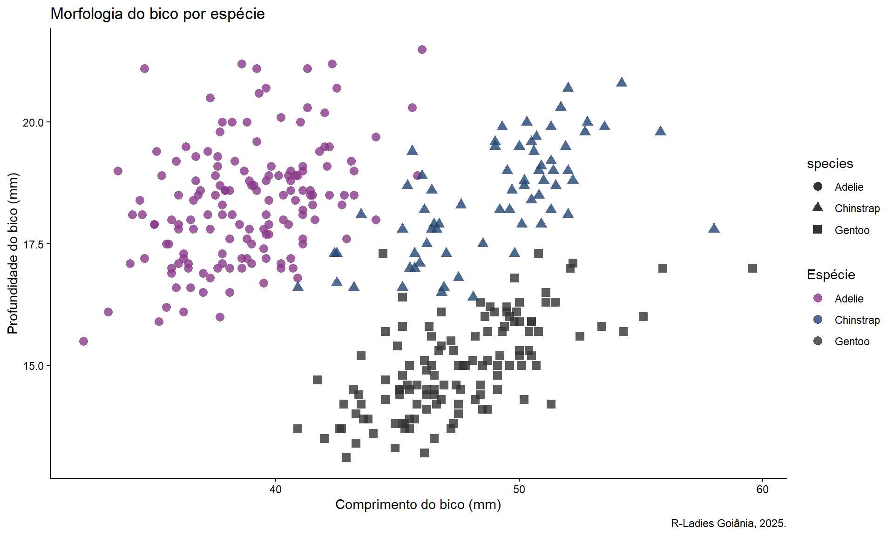
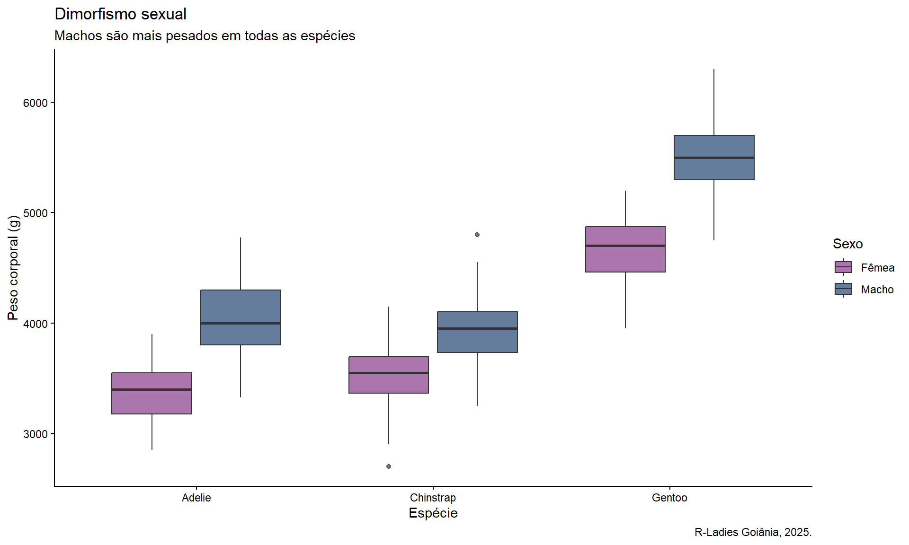

Ver código
# Carregar pacotes
library(pacman)
pacman::p_load(tidyverse, here, DT)
# Configurar tema dos gráficos
theme_set(theme_classic())Entre 2007 e 2009, a Dra. Kristen Gorman e sua equipe estudaram três espécies de pinguins em ilhas da Antártica. Este relatório apresenta uma análise das características físicas que distinguem cada espécie.

Pergunta de pesquisa: Será que conseguimos identificar a espécie de um pinguim apenas observando suas medidas corporais?
# Carregar pacotes
library(pacman)
pacman::p_load(tidyverse, here, DT)
# Configurar tema dos gráficos
theme_set(theme_classic())O dataset contém informações de pinguins de 3 espécies diferentes, coletados em 3 ilhas da Antártica.
# importação
penguins <- read.csv(here("dados", "penguins.csv"))# Visão geral
dplyr::glimpse(penguins)Rows: 344
Columns: 8
$ species <chr> "Adelie", "Adelie", "Adelie", "Adelie", "Adelie", "A…
$ island <chr> "Torgersen", "Torgersen", "Torgersen", "Torgersen", …
$ bill_length_mm <dbl> 39.1, 39.5, 40.3, NA, 36.7, 39.3, 38.9, 39.2, 34.1, …
$ bill_depth_mm <dbl> 18.7, 17.4, 18.0, NA, 19.3, 20.6, 17.8, 19.6, 18.1, …
$ flipper_length_mm <int> 181, 186, 195, NA, 193, 190, 181, 195, 193, 190, 186…
$ body_mass_g <int> 3750, 3800, 3250, NA, 3450, 3650, 3625, 4675, 3475, …
$ sex <chr> "male", "female", "female", NA, "female", "male", "f…
$ year <int> 2007, 2007, 2007, 2007, 2007, 2007, 2007, 2007, 2007…penguins |>
group_by(species) |>
summarise(
`N° Pinguins` = n(),
`Peso Médio (g)` = round(mean(body_mass_g, na.rm = TRUE)),
`Nadadeira Média (mm)` = round(mean(flipper_length_mm, na.rm = TRUE))) |>
DT::datatable()Os pinguins Gentoo são significativamente maiores que as outras duas espécies!
Existe uma forte correlação positiva entre o comprimento da nadadeira e o peso corporal em todas as espécies.
ggplot(penguins, aes(x = flipper_length_mm, y = body_mass_g, color = species)) +
geom_point(size = 3, alpha = 0.7) +
geom_smooth(method = "lm", se = FALSE, linetype = "dashed") +
labs(
title = "Relação entre tamanho da nadadeira e peso corporal",
x = "Comprimento da nadadeira (mm)",
y = "Peso corporal (g)",
color = "Espécie",
caption = "R-Ladies Goiânia, 2025.") +
scale_color_manual(values = c("#88398a", "#224573", "#333333")) +
theme_classic()
O formato do bico é único para cada espécie, tornando possível a identificação visual.
ggplot(penguins, aes(x = bill_length_mm, y = bill_depth_mm,
color = species, shape = species)) +
geom_point(size = 3, alpha = 0.8) +
labs(
title = "Morfologia do bico por espécie",
x = "Comprimento do bico (mm)",
y = "Profundidade do bico (mm)",
color = "Espécie",
caption = "R-Ladies Goiânia, 2025.") +
scale_color_manual(values = c("#88398a", "#224573", "#333333")) +
theme_classic()
SIM! As espécies formam clusters distintos no gráfico de morfologia do bico:
Machos são consistentemente mais pesados que fêmeas em todas as espécies estudadas.
penguins |>
filter(!is.na(sex)) |>
ggplot(aes(x = species, y = body_mass_g, fill = sex)) +
geom_boxplot(alpha = 0.7) +
labs(
title = "Dimorfismo sexual",
subtitle = "Machos são mais pesados em todas as espécies",
x = "Espécie",
y = "Peso corporal (g)",
fill = "Sexo",
caption = "R-Ladies Goiânia, 2025.") +
scale_fill_manual(
values = c("female" = "#88398a", "male" = "#224573"),
labels = c("Fêmea", "Macho")) +
theme_classic()
Gentoo são os maiores pinguins (~5000g), seguidos por Chinstrap e Adelie (~3700g)
Cada espécie possui morfologia de bico característica, permitindo identificação visual
Dimorfismo sexual presente em todas as espécies, com machos sendo mais pesados
Forte correlação entre comprimento de nadadeira e peso corporal
Dataset: Palmer Penguins
Fonte: Palmer Station LTER
Pesquisadora: Dra. Kristen Gorman
Período: 2007-200